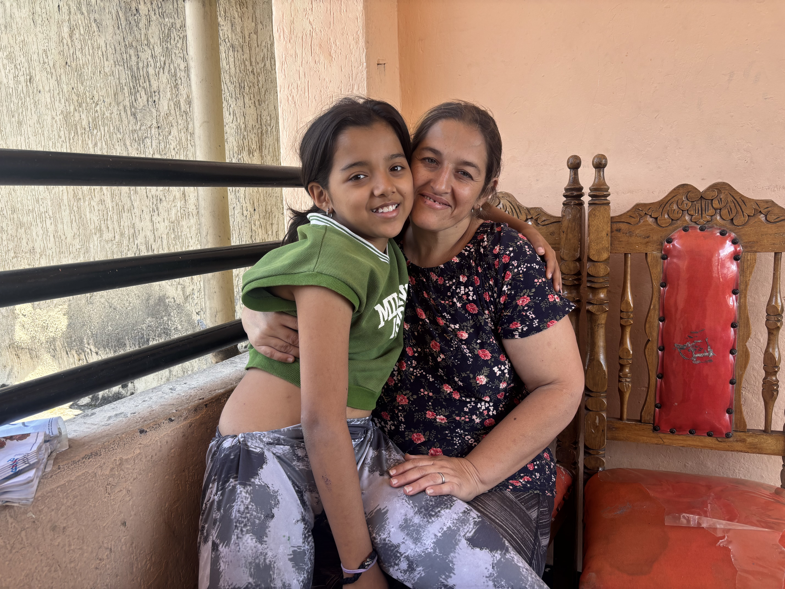

Nuestras Historias
Cada camino deja huellas y cada experiencia se transforma en un relato. En esta sección compartimos dos historias que reflejan momentos significativos, recuerdos y aprendizajes que han marcado nuestras vidas.

El Sendero de los Sueños
Este relato representa los primeros pasos hacia aquello que parecía lejano e incierto. Cada obstáculo se convirtió en una oportunidad para aprender, crecer y descubrir nuevas fortalezas.
A lo largo del camino surgieron dudas y desafíos, pero también personas, momentos y enseñanzas que dejaron una huella profunda. Con el tiempo, comprendimos que avanzar no significa tener todas las respuestas, sino mantener la determinación de seguir adelante.
Esta historia nos recuerda que los sueños se construyen con paciencia, esfuerzo y valentía, y que cada paso, por pequeño que parezca, nos acerca a la versión de nosotras mismas que deseamos alcanzar.
La Ruta de la Memoria
Algunas historias nacen de los recuerdos que permanecen vivos con el paso del tiempo. Esta ruta simboliza la importancia de valorar cada experiencia y reconocer el aprendizaje que dejan los momentos compartidos.
Mirar hacia atrás permite comprender cuánto hemos crecido y cómo las vivencias del pasado han dado forma a nuestra identidad. Cada recuerdo conserva emociones, enseñanzas y vínculos que siguen acompañándonos.
Este relato es una invitación a honrar el camino recorrido y a reconocer que nuestras historias personales son parte fundamental de lo que somos hoy.